Alfred Sisley
Allée of Chestnut Trees, 1878
Medium Oil on Canvas
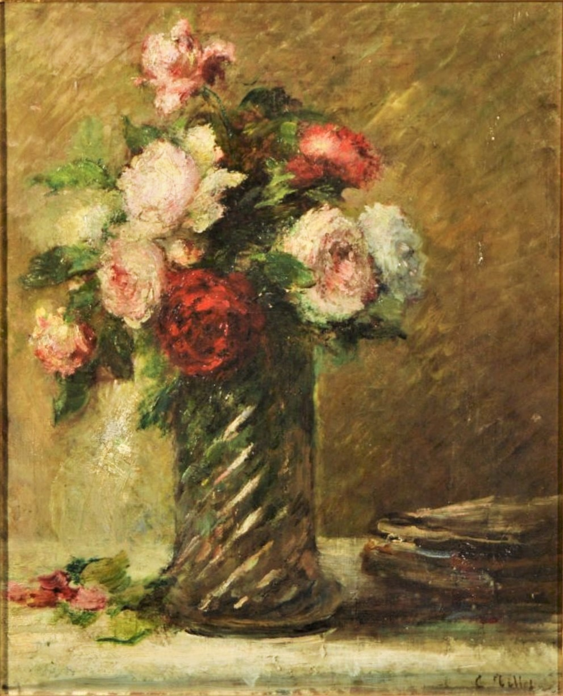
Charles Tillot
Nature Morte Au Bouquet de Roses, 1886
Medium Oil on Canvas
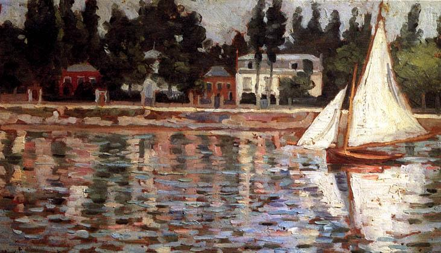
Alphonse Maureau
Bords de la Seine, 1877
Medium Oil on Canvas
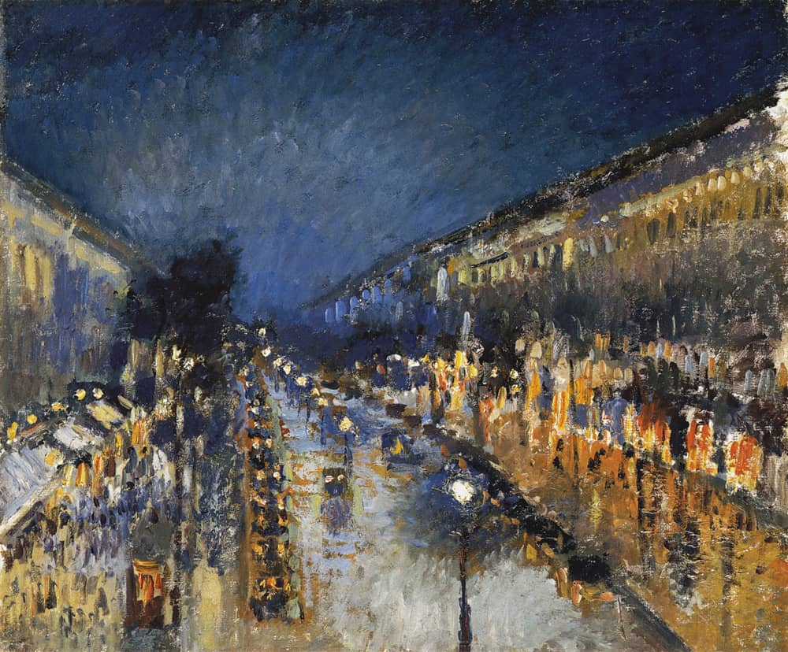
Camille Pissarro
Boulevard Montmartre at Night, 1897
Medium Oil on Canvas
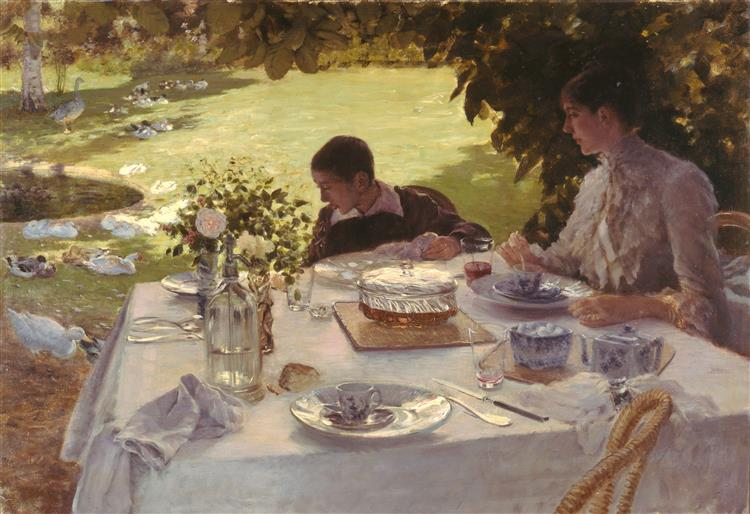
Giuseppe De Nittis
Breakfast in the Garden, 1883
Medium Oil on Canvas
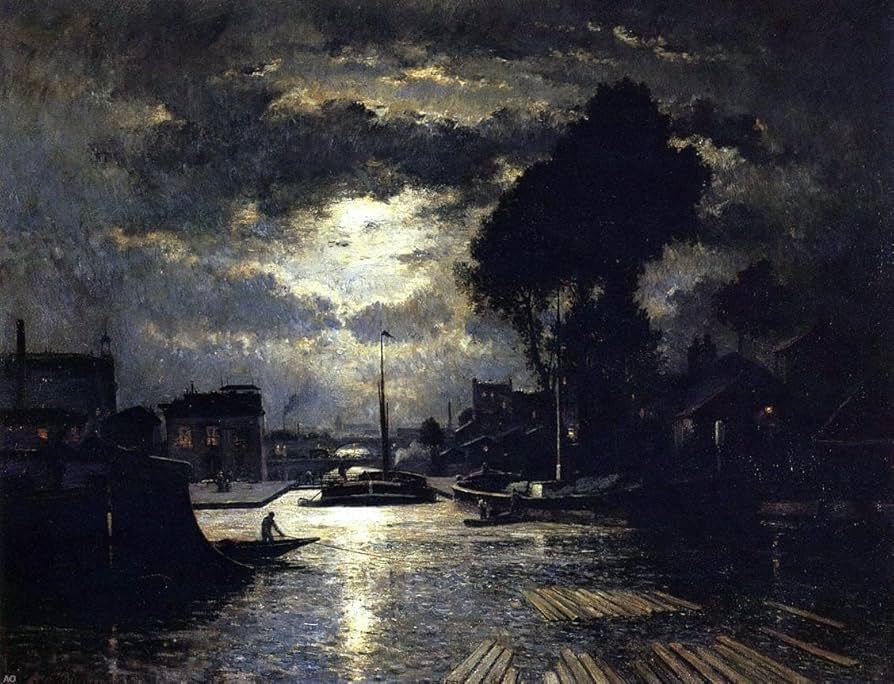
Stanislas Lepine
Canal Saint-Denis, 1877
Medium Oil on Canvas
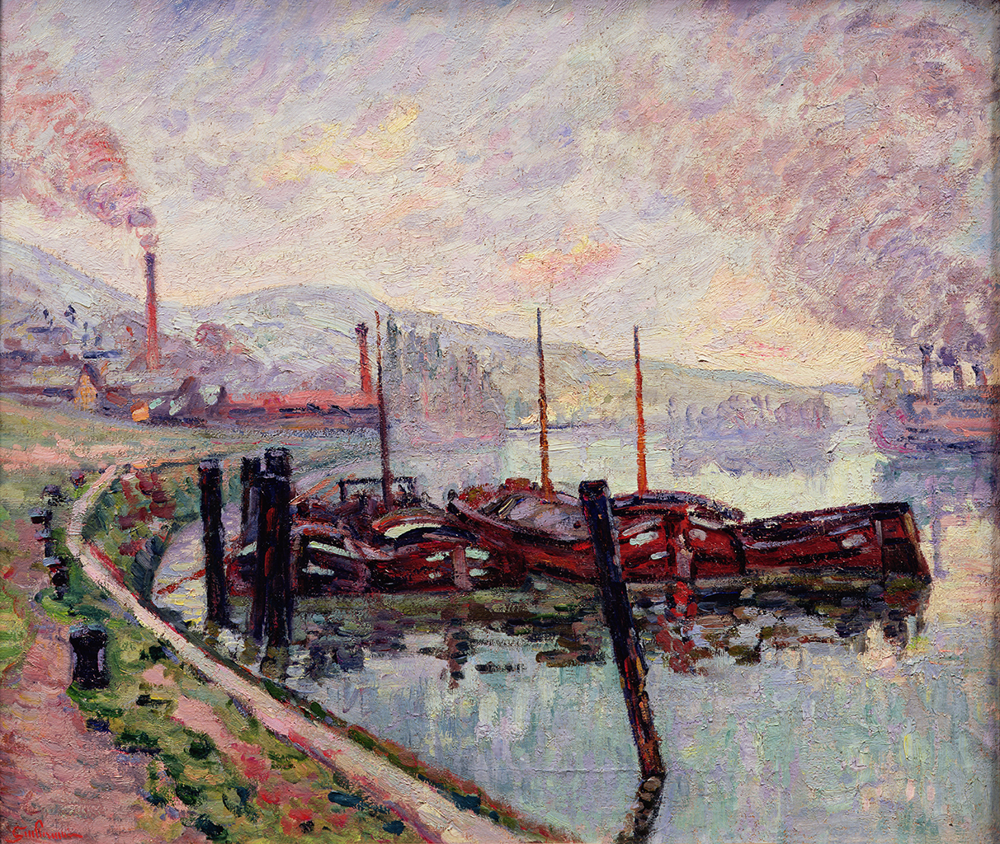
Armand Guillaumin
Morning, Rouen, 1904
Medium Oil on Canvas
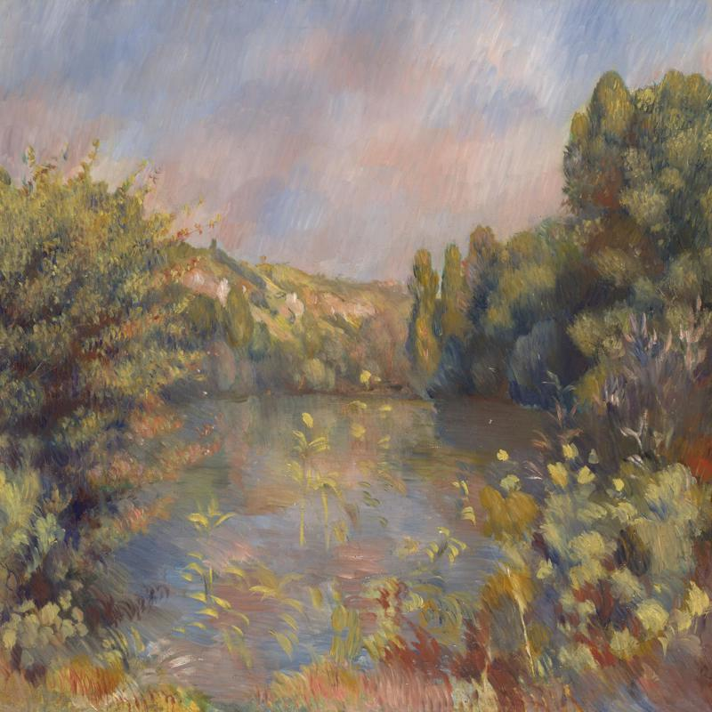
Pierre-Auguste Renoir
Lakeside Landscape, 1889
Medium Oil on Canvas
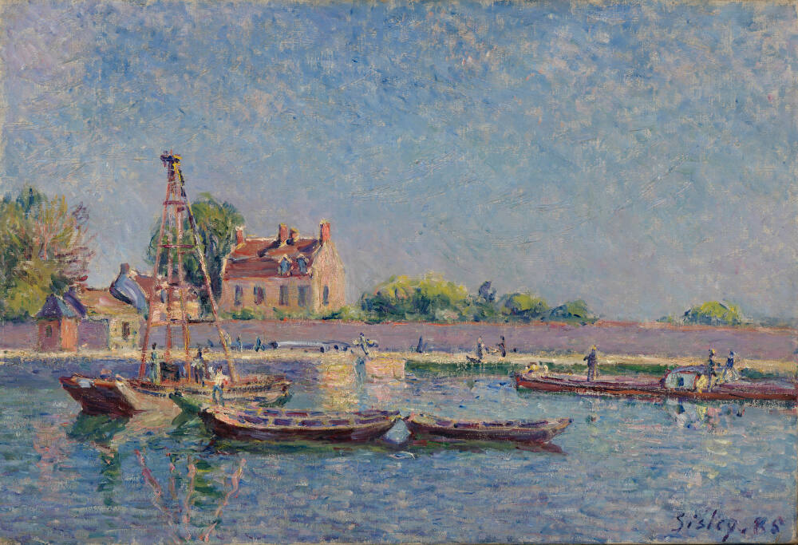
Alfred Sisley
The Lock of Saint-Mammès, 1885
Medium Oil on Canvas
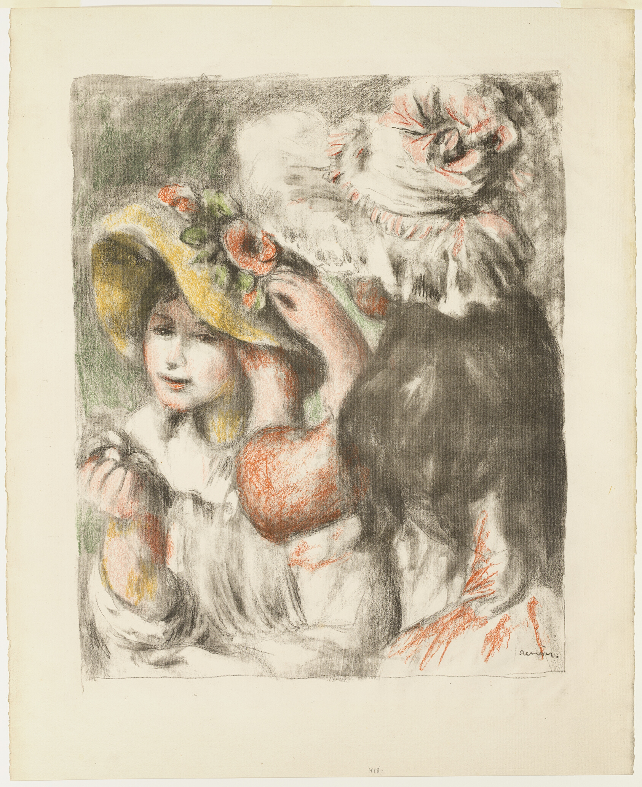
Pierre-Auguste Renoir
Pinning the Hat, 1898
Medium Lithograph
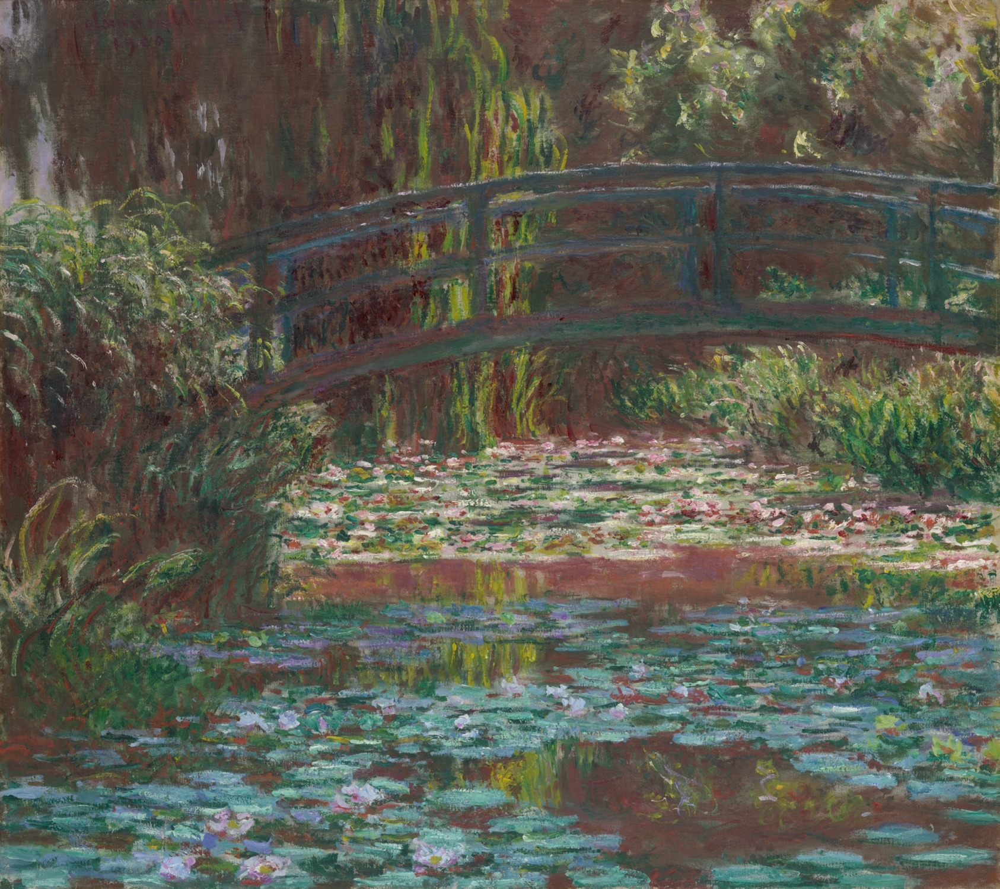
Claude Monet
Water Lily Pond, 1900
Medium Oil on Canvas
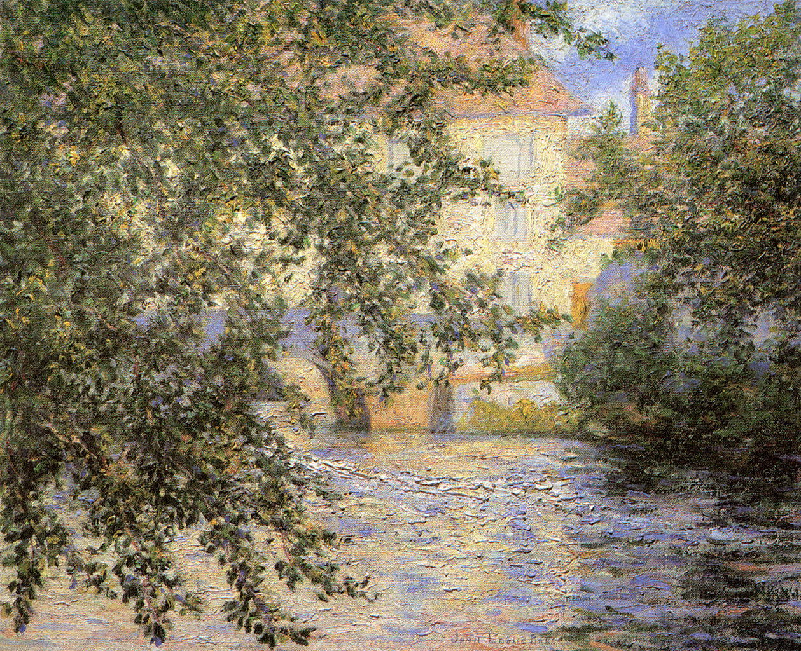
Claude Monet
Mill at Limetza, 1888
Medium Oil on Canvas